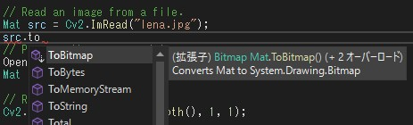
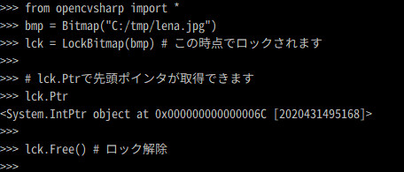

IronPythonからOpenCVSharp その1 で、IronPythonからOpenCVを使う事ができることが確認できたと思います。
とは言っても、CPythonでOpenCVを使うのと比較すると、「こんな時はどうするの？」ということが多々あります。以下に一部を説明しようと思います。
(1) Mat必ずDisposeしてください
OpenCvSharpの多くのクラスは、IDisposableが実装されています。
しかし、MatやMatExprクラスは特殊で、必ずDispose()メソッドが必要です。そうしないとメモリーリークが発生します。
ちなみに、C#でもBitmapクラスはDispose()メソッドが必須です。
(2) Mat.Get<T>とMat.Set<T>について
画像を読み込み、各ピクセルにアクセスするための関数「Mat.Get」「Mat.Set」。これらをOpenCVSharp上で「img.Get[T](0, 0)」のように使用するとエラーが表示されてしまいます。
ちなみに、C#における<T>function()はIronPython上では[T]function()となります。
>>> from opencvsharp import *
>>> from OpenCvSharp import Vec3b
>>>
>>> fn = path.join(IPY_OPENCVSHARP, "lena.jpg")
>>> img = Cv2.ImRead(fn, OpenCvSharp.ImreadModes.Color)
>>>
>>> img.Get[Vec3b](0, 0)
Traceback (most recent call last):
File "<stdin>", line 1, in <module>
TypeError: Multiple targets could match: Get(Int32, Int32), Get(Array[Int32])
>>> エラーの内容は、「オーバーロード（多重定義）されている関数だから明示的に対応してください」ということだと思います。
こちらの「Method overloads」の記述が参考になると思います。
エラーで「Get(Int32, Int32)」と言われているので、まず、「System.Int32」を使えるようにし、次にOverloadsを利用すると正常に動作します。長ったらしくなるので、「Method overloads」の記事のようにしたり、関数化するのが良いかもしれません。
>>>
>>> from System import Int32
>>> img.Get[Vec3b].Overloads[Int32, Int32](0, 0)
<OpenCvSharp.Vec3b object at 0x000000000000002B [Vec3b (127, 137, 224)]>
>>> (3) Mat.ToBitmapについて
MatをC#のBitmapに変換する関数は、C#上では以下のように簡単に利用できます。

しかし、IronPythonのMatからでは利用できません。
>>>
>>> img.ToBitmap()
Traceback (most recent call last):
File "<stdin>", line 1, in <module>
AttributeError: 'Mat' object has no attribute 'ToBitmap'
>>> 「ToBitmap」関数は「OpenCvSharp.Extensions.BitmapConverter.ToBitmap」にあるので、以下のように簡単に扱えるようにしておくと良いと思います。
ToBitmap = OpenCvSharp.Extensions.BitmapConverter.ToBitmap以下のように使うことができます。
>>>
>>> ToBitmap(img)
<System.Drawing.Bitmap object at 0x000000000000002C [System.Drawing.Bitmap]>
>>> (4) その他の便利関数
IronPythonにおいて（C#においても）、「Mat.Data」で「Mat」のIntPtrを取得することが可能です。
C#の「Marshal.Copy()」は、「IntPtr」同士の配列コピーできません。C++の「memcpy」を利用した関数を「wk_util_opencvsharp」プロジェクトで作成しました。その他にもOpenCvSharpであると便利そうな関数を入れておきました。
以下に「wk_util_opencvsharp」のヘッダーファイルをあげます。（どんな関数が定義されているか分かります）
// wk_util_opencvsharp.h
#pragma once
using namespace System;
using namespace OpenCvSharp;
using namespace System::Drawing;
using namespace System::Drawing::Imaging;
using namespace System::Windows::Threading;
namespace wk_util_opencvsharp
{
public ref class Cv2Util
{
public:
static void Memcopy(IntPtr src, IntPtr dst, int num);
static void GrayscalePalette(Bitmap^ bmp);
static int SizeOfSbyte();
static int SizeOfByte();
static int SizeOfShort();
static int SizeOfUshort();
static int SizeOfInt();
static int SizeOfUint();
static int SizeOfLong();
static int SizeOfUlong();
static int SizeOfChar();
static int SizeOfFloat();
static int SizeOfDouble();
static int SizeOfDecimal();
static int SizeOfBool();
static void DoEvents();
};
public ref class LockBitmap
{
private:
System::Drawing::Bitmap^ _src;
System::Drawing::Imaging::BitmapData^ _srcData;
System::Drawing::Imaging::PixelFormat _pf;
int _w;
int _h;
int _st;
IntPtr _ip;
public:
LockBitmap(System::Drawing::Bitmap^ ini);
void Free();
property IntPtr Ptr
{
IntPtr get()
{
return _ip;
}
}
};
}
簡単に関数やクラスを説明します。
- 「void Memcopy(IntPtr src, IntPtr dst, int num)」
- C#の「Marshal.Copy()」は「IntPtr」同士の配列コピーできません。C++の「memcpy」を利用しました。まさにC++/CLIのマネージ拡張機能の活用です。
- C#の「Marshal.Copy()」は「IntPtr」同士の配列コピーできません。C++の「memcpy」を利用しました。まさにC++/CLIのマネージ拡張機能の活用です。
- 「void GrayscalePalette(Bitmap^ bmp)」
- Bitmapクラスを「PixelFormat.Format8bppIndexed」で新規作成した時、カラーパレットはグレイスケールになっていません。
- カラーパレットをグレイスケールにする関数です。
- 「int SizeOf***()」
- C++の「sizeof」関数です。
- C++の「sizeof」関数です。
- 「LockBitmapクラス」
- Bitmapクラスから先頭ポインタを取得するためのクラスです。使い方は以下の通りです。

- Bitmapクラスから先頭ポインタを取得するためのクラスです。使い方は以下の通りです。
コードの詳細は「wk_util_opencvsharp.cpp」を見てください。そんなに難しいことはしていません。
実はこちらのドキュメントにあるように、「OpenCvSharp.Util::MemoryHelper」に「CopyMemory」があるのですが、なぜか「MemoryHelper」が見当たりません。。。
OpenCvSharp4.1のころのこちらの記事から大幅に変更しました。